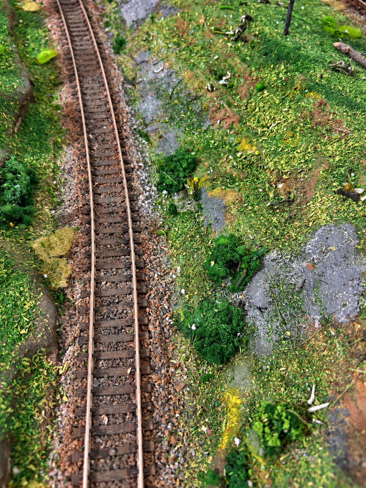

Como fazer arbustos e moitas com esponja de cozinha
Uma esponja comum pode ser transformada em material para representar grama, pequenos arbustos e moitas no cenário. O processo é simples e permite criar diferentes tonalidades de verde, produzindo uma vegetação menos uniforme e com aparência mais natural.

Como fazer
- Picar a esponja utilizando um ralador ou uma tesoura. Caso seja utilizado o ralador, deve-se ter cuidado para evitar acidentes com os dedos.
- Colocar os pedaços de esponja em uma vasilha, acrescentar água e apertar várias vezes até que fiquem bem encharcados.
- Preparar diferentes tonalidades de verde. Para obter um verde mais claro, pode-se misturar verde com amarelo. Também podem ser utilizados corantes para criar outras variações.
- Colocar a esponja úmida e a tinta em um copo ou recipiente e misturar bem, apertando o material para que a coloração penetre de maneira uniforme.
- Espalhar o material e deixá-lo secar completamente ao sol.
- Depois de seco, cortar novamente a esponja com uma tesoura, procurando obter pedaços bem pequenos.
- Passar o material por uma peneira para separar as diferentes granulometrias.
- Utilizar a parte mais fina para representar a grama. Os pedaços maiores podem ser usados para formar pequenas moitas, arbustos e vegetação mais volumosa.
Uma dica
Recomenda-se preparar pequenas quantidades em diferentes tons de verde. Ao misturá-las durante a aplicação no cenário, a vegetação fica menos uniforme e apresenta uma aparência mais natural.